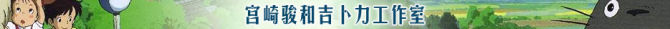

当宫崎骏在1997年拍摄完《幽灵公主》后就放言要收山，让无数动画迷们唏嘘不已。结果宫崎骏在2001年携《千与千寻》出山，还获得了奥斯卡等一众国际大奖让世界再次见识到这位老人惊人的动画魅力和越发平静却越发深省的创作理念。可惜宫崎骏创作作品的速度足够让影迷们把之前的作品看了再看。在绝望到以为老爷子又要悄悄收山的时候，《哈尔的移动城堡》适时诞生，姑且不论其是否符合影迷们心中宫崎骏电影的标准，但女孩、魔法、飞行等符号一应具全的呈现出来的时候也足以让人欣慰很久，原来宫崎骏还会继续创作。2008年7月19日，宫崎骏暌违4年的作品《悬崖上的金鱼姬》日本全面公映。与其说这是一部宫崎骏送给影迷们的电影，不如说是一部送给自己的电影。在看到新作之前，不妨来回味一下宫崎骏24年来的经典作品，重走成长之路。
宫崎骏介绍
宫崎骏（1941年1月5日），日本著名动画导演、动画师及漫画家，他曾经使用的笔名包括秋津三朗（あきつ さぶろう）与照树务（てれこむ），目前他住在埼玉县所泽市。宫崎骏毕业于自杉并区立永福小学校、杉并区立大宫中学校、东京都立豊多摩高等学校及学习院大学政治经济学部。1963年进入东映动画公司，1965年与同事太田朱美结婚，并育有两子，1985年与高畑勋共同创立吉卜力工作室。宫崎骏在全球动画界具有无可替代的地位，迪斯尼称其为“动画界的黑泽明”。其动画作品大多涉及人类与自然之间的关系、和平主义及女权运动。
吉卜力工作室
吉卜力工作室，是一家日本动画工作室。成立于1985年中旬，原附属于德间书店，位于日本东京都近郊的小金井市，目前约有300名员工，由导演宫崎骏以及他的同事高畑勋、铃木敏夫等一起统筹，作曲家久石让也为许多吉卜力工作室的作品制作过电影音乐。工作室标识为其代表作品《龙猫》。
“吉卜力”（Ghibli）是由宫崎骏命名，意思是在撒哈拉沙漠上季节热风。吉卜力工作室从2003年开始发行的杂志名字也叫《热风》。工作室的标志是使用他们的作品《龙猫》中的登场角色—“龙猫”（トトロ）来设计的。吉卜力的附属工作室“卡吉诺工作室（スタジオカジノ）”是以公司所在的“小金井市梶野町”的发音来命名的。